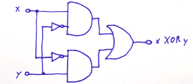

初学者教程
欢迎使用 Logisim-evolution
可以用 Logisim-evolution 设计和仿真数字电路。它是一款教学工具，用于帮助学习电路的工作原理。
为了练习使用 Logisim，本教程会构建一个异或电路。它有两个输入（这里称为 x 和 y），如果输入相同则输出 0，如果不同则输出 1。下面的真值表说明了这一点。
| x | y | x 异或 y |
|---|---|---|
| 0 | 0 | 0 |
| 1 | 0 | 1 |
| 0 | 1 | 1 |
| 1 | 1 | 0 |

可以先在纸上设计这样的电路。
不过，画在纸上并不代表电路一定正确。为了验证设计，接下来会在 Logisim 中画出它并进行测试。顺带还能得到一个比手绘更整洁的电路。
第 0 步：熟悉环境
第 1 步：添加门电路
第 2 步：添加导线
第 3 步：添加文本
第 4 步：测试电路
第 5 步：单步模式
完成这些步骤后，就可以开始构建自己的电路。
下一节： 第 0 步：熟悉环境